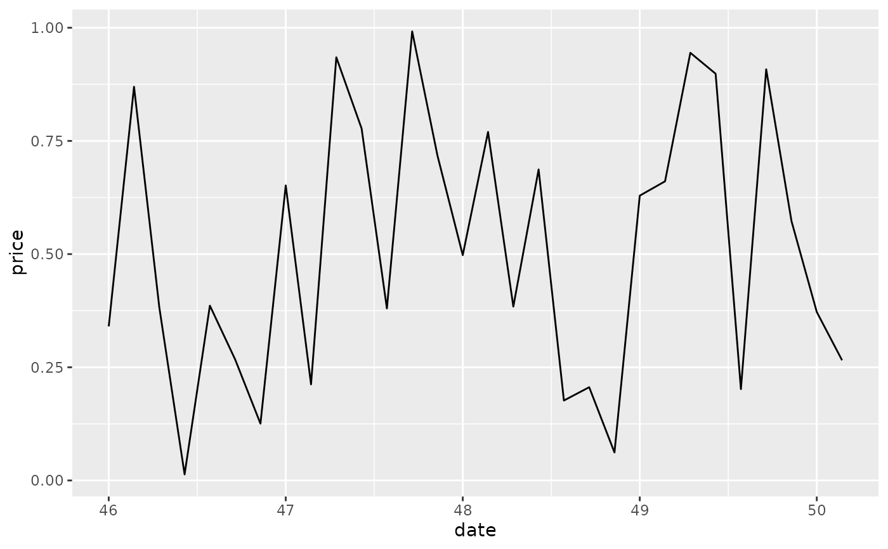
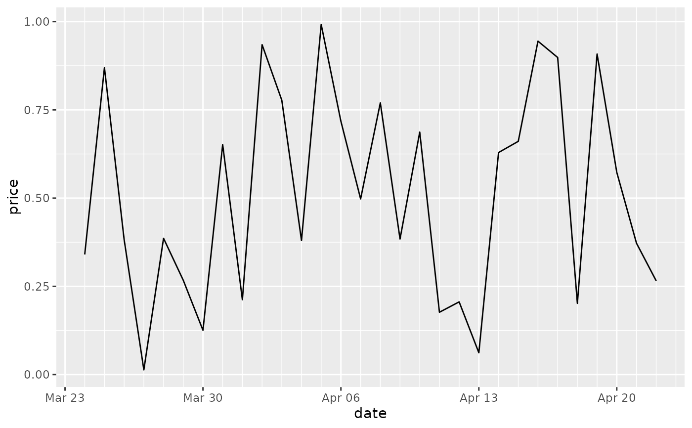
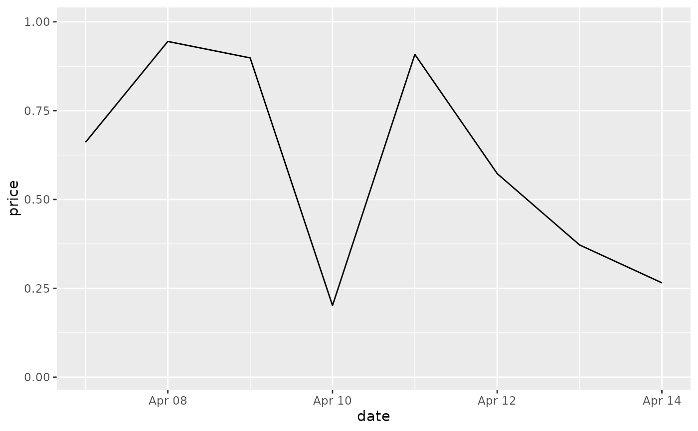

These are the default scales for the three date/time class. These will
usually be added automatically. To override manually, use
scale_*_date for dates (class Date),
scale_*_datetime for datetimes (class POSIXct), and
scale_*_time for times (class hms).
scale_x_date( name = waiver(), breaks = waiver(), date_breaks = waiver(), labels = waiver(), date_labels = waiver(), minor_breaks = waiver(), date_minor_breaks = waiver(), limits = NULL, expand = waiver(), oob = censor, guide = waiver(), position = "bottom", sec.axis = waiver() ) scale_y_date( name = waiver(), breaks = waiver(), date_breaks = waiver(), labels = waiver(), date_labels = waiver(), minor_breaks = waiver(), date_minor_breaks = waiver(), limits = NULL, expand = waiver(), oob = censor, guide = waiver(), position = "left", sec.axis = waiver() ) scale_x_datetime( name = waiver(), breaks = waiver(), date_breaks = waiver(), labels = waiver(), date_labels = waiver(), minor_breaks = waiver(), date_minor_breaks = waiver(), timezone = NULL, limits = NULL, expand = waiver(), oob = censor, guide = waiver(), position = "bottom", sec.axis = waiver() ) scale_y_datetime( name = waiver(), breaks = waiver(), date_breaks = waiver(), labels = waiver(), date_labels = waiver(), minor_breaks = waiver(), date_minor_breaks = waiver(), timezone = NULL, limits = NULL, expand = waiver(), oob = censor, guide = waiver(), position = "left", sec.axis = waiver() ) scale_x_time( name = waiver(), breaks = waiver(), minor_breaks = waiver(), labels = waiver(), limits = NULL, expand = waiver(), oob = censor, na.value = NA_real_, guide = waiver(), position = "bottom", sec.axis = waiver() ) scale_y_time( name = waiver(), breaks = waiver(), minor_breaks = waiver(), labels = waiver(), limits = NULL, expand = waiver(), oob = censor, na.value = NA_real_, guide = waiver(), position = "left", sec.axis = waiver() )
| name | The name of the scale. Used as the axis or legend title. If
|
|---|---|
| breaks | One of:
|
| date_breaks | A string giving the distance between breaks like "2
weeks", or "10 years". If both |
| labels | One of: |
| date_labels | A string giving the formatting specification for the
labels. Codes are defined in |
| minor_breaks | One of:
|
| date_minor_breaks | A string giving the distance between minor breaks
like "2 weeks", or "10 years". If both |
| limits | One of:
|
| expand | For position scales, a vector of range expansion constants used to add some
padding around the data to ensure that they are placed some distance
away from the axes. Use the convenience function |
| oob | One of:
|
| guide | A function used to create a guide or its name. See
|
| position | For position scales, The position of the axis.
|
| sec.axis |
|
| timezone | The timezone to use for display on the axes. The default
( |
| na.value | Missing values will be replaced with this value. |
sec_axis() for how to specify secondary axes
Other position scales:
scale_x_binned(),
scale_x_continuous(),
scale_x_discrete()
last_month <- Sys.Date() - 0:29 df <- data.frame( date = last_month, price = runif(30) ) base <- ggplot(df, aes(date, price)) + geom_line() # The date scale will attempt to pick sensible defaults for # major and minor tick marks. Override with date_breaks, date_labels # date_minor_breaks arguments. base + scale_x_date(date_labels = "%b %d")base + scale_x_date(date_breaks = "1 week", date_labels = "%W")base + scale_x_date(date_minor_breaks = "1 day")#> Warning: Removed 22 row(s) containing missing values (geom_path).